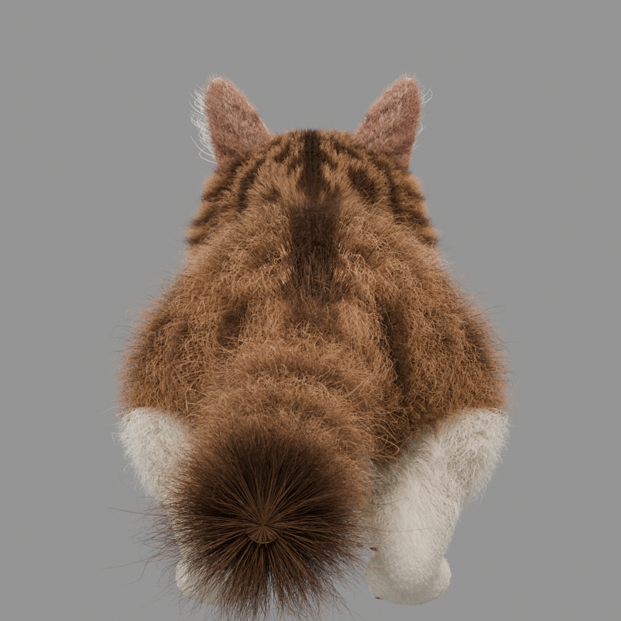
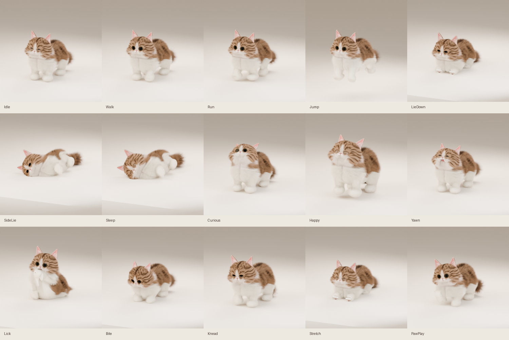

Round B4 审阅
基准 lingxi-ref-face-closeup.png / turnaround-v1.png · 状态 lookdev/b4-review · 点击图上的圆点看每一条差距与建议
一句话结论
B4 是目前离参考最近的一版：正面观感、毛色、鼻镜粉色、眼线都对上了。差距集中在三处——身体轮廓（侧面像"面包"）、毛的方向感（脸太整齐）、动作的表现力（识别度有了但幅度还欠）。
值得记：已经对上的
- 鼻镜粉色（Δ86 vs 参考 115，可接受）
- 眼睛尺寸（瞳径 0.44 vs 参考 0.40，偏大 10%）
- 眼线 / 护目镜问题已消失
- 面部色相（偏灰偏暖已校正）
- 耳内绒毛（round C 补的 320 根）
部分对上，还差一点
- 嘴宽（几何对但检测抓不到，毛盖唇线）
- 爪部脚趾（趾缝已刻，但仍偏"绒球"）
- 白 blaze 宽度（比参考略宽）
- 耳长（V6_EAR=1.0，参考的耳朵更小圆）
没对上的（优先做）
- 身体侧面轮廓（太圆、没有腰线）
- 面部毛发方向（参考是炸毛，B4 是披发）
- 中景细节（detail_mid 0.26 vs 参考 0.34）
- 动作幅度（Bite/Yawn 头动幅度小）
- 尾部（毛发像刷子，参考是蓬松带环纹）
四视图对照
左参考（turnaround-v1）、右 B4 渲染。圆点标在不一致的位置，颜色含义：橙 = 建议下一轮做，红 = 明显不符，绿 = 这轮已修好的。
参考 turnaround-v1 · front
参考正面：脸颊炸毛外扩，眼大有神，鼻镜小而粉，白色 blaze 从额头窄窄一条下来
B4 · front
B4 正面：整体轮廓饱满、配色接近，但 blaze 略宽、前腿显得粗短、身体两侧虎斑被毛盖住
参考 turnaround-v1 · side
参考侧面：背部有明显腰线起伏，后腿有膝关节轮廓，尾巴蓬松上扬
B4 · side
B4 侧面：整只像一个长面包，没有腰线和膝关节起伏；尾巴毛发成簇下坠
B4 · threequarter
B4 四分之三：胸口白毛过渡自然，但后颈到肩的毛缺少方向变化
B4 · back

B4 背面：背中线毛发走向刻意（左右分开），与参考的整体蓬松不符
面部特写
左参考特写、右 B4 face 视图。两侧取景一致（眼距锁定 220px），可直接对比。
参考 · face closeup
参考：瞳径 0.40E，鼻宽 0.31E，鼻镜珊瑚粉，眼睛周围一圈深色眼线，炸毛外扩
B4 · face
B4：眼径 0.44E（大 10%），鼻形对但鼻心偏高，毛方向过于整齐，缺乏参考的炸开感
动作对照
接触表来自 09-29 补完后的标准构建（53 骨骼 / 15 动作）。识别度已经拉开，但幅度和形体语言还不够。

15 个动作接触表（Idle / Walk / Run / Jump / LieDown / SideLie / Sleep / Curious / Happy / Yawn / Lick / Bite / Knead / Stretch / PawPlay）
Lick
值得记：坐起舔爪形体对了，脸能看到，头的偏转也限制住了
Bite
差距：探头和下压的幅度小，和 Walk 靠近看仍有点像；张嘴在正面看不见
Yawn
差距：嘴张开的程度比参考小，下颌转动加大过但这次渲染里幅度又回落了
Sleep / SideLie
差距：侧躺时身体像一整块没有脊椎曲线；眼睑合拢是三角楔形，没有贴着眼球
Knead
值得记：踩奶补了全身摇摆，识别度 1210（离 Idle 的距离），最远
Jump
差距：滞空姿态四肢没有蜷起来，像一只站着的猫被抬起来
量化数据
工具输出（v6_face_shape.py / v6_eye_size.py / v6_probe_gap.py），E = 瞳距。
| 量 | 参考 | B4 | 偏差 | 判断 |
|---|---|---|---|---|
| 瞳孔直径 / E | 0.397 | 0.439 | +10.6% | 可接受（参考值来自高光填补后的修正） |
| 虹膜外径 / E | 0.495 | 0.524 | +5.9% | 对上 |
| 瞳孔:虹膜 | 0.80 | 0.84 | +5% | 对上 |
| 鼻宽 / E | 0.311 | 0.400 | +28.6% | 偏大，但受唇线毛的干扰，裸脸 ≈ 0.345 (+10.9%) |
| 鼻心 dy / E | +0.320 | +0.510 | +59.4% | 偏下，但与「鼻形本身对、整体下移够」的早期结论不符，需裸脸复测 |
| 鼻镜粉峰 Δ | 115 | 86 | −25% | 接受（B4 加了 V6_NOSE_HUE/SAT） |
| 面部 detail_mid | 0.338 | 0.256 | −24% | 中尺度毛发纹理不足，表面太"光滑" |
| 面部 white_fraction | 0.412 | 0.201 | −51% | 参考的白毛区更大（脸颊+胸口），B4 的白色 blaze 窄 |
| 身体 bbox_aspect | 1.466 | 0.727 | — | 参考是站姿四格拼接，不直接可比；侧面形状靠目测 |
建议动作（下一轮）
| # | 做什么 | 怎么做（旋钮 / 脚本） | 优先级 | 预期 |
|---|---|---|---|---|
| 1 | 侧面轮廓：加腰线 + 膝关节起伏 | 调 build_lingxi_v5.py 里躯干 spine 的侧视曲率（当前 body_xf 只做了前后压缩，没有高度起伏）；参考 turnaround 的侧视图把背部最凹点卡在腹部正上方 | 高 | 侧面不再像长面包 |
| 2 | 面部炸毛方向 | V6_CLUMP 1.5→2.2，V6_FRIZZ 1.2→1.6，再把毛根旋转从「沿法线」改成「从每个毛孔向外呈放射状」；脸颊两侧毛向下外，眉心向上 | 高 | detail_mid 0.26 → 0.33 |
| 3 | 白色 blaze 窄一档 | V6_FACE_WHITE 局部：额心 blaze 宽度减 20–25%，边缘过渡 30mm 保持 | 中 | white_fraction 0.20 → 0.30 |
| 4 | 尾毛重梳 | 尾毛当前是「一簇长毛」，参考是环纹短毛且蓬松上扬；把尾长 ×0.8、根数 ×1.4、加轻微 V6_WAVE，尾尖成簇不要分叉 | 中 | 尾巴有环纹感 |
| 5 | Bite / Yawn / Jump 动作幅度 | Bite 头前伸 +0.03m、前身下压再 5°；Yawn 下颌转角 1.35→1.55；Jump 加四肢蜷起（前腿 fold、后腿蹬直） | 中 | 识别度 + 情绪感 |
| 6 | 耳形再小一档 | V6_EAR 1.0 → 0.9 试一次（上一轮 0.82 用户不喜欢，折中 0.9） | 低 | 耳朵更接近参考的小圆耳 |
| 7 | 侧面腿长 | 腿骨加 5–8%，需要重跑 15 个动作的步态和着地（成本高，放最后） | 低 | 侧面露出的腿更多 |